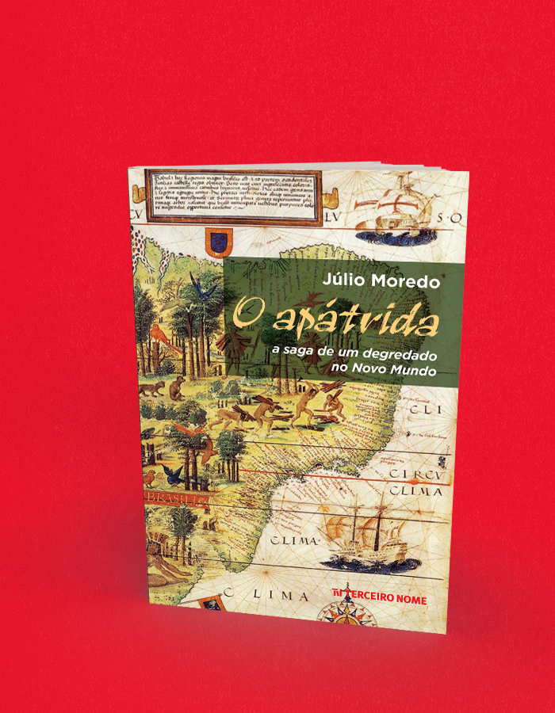

O apátrida a saga de um degredado no Novo Mundo
A compra acontece no site da livraria, em uma nova aba. Consulte lá os preços e a disponibilidade. Procure pelo título ou ISBN deste livro.
- Autoria / créditos
- Júlio Moredo
- ISBN
- 9786587618050
- Páginas
- 232
- Formato
- 14 x 21 cm
- Acabamento
- brochura
Sobre o livro
Cosme Pessoa Fernandes nasceu na vila de Miranda, Trás-os-Montes, em 1474, e depois de estudar em Salamanca e ser preso em Lisboa, onde era ouvidor, foi mandado como degredado para São Tomé e Príncipe, ilha-prisão do reino. Já estava adaptado à vida africana quando a esquadra de Bartolomeu Dias – o famoso navegador que dobrou o Cabo da Boa Esperança – chegou lá a mando do rei D. Manuel I para buscá-lo e o levar degredado ao Brasil. Isso mesmo: o Brasil sequer tinha sido oficialmente “descoberto” e Cosme seria largado perto de onde a linha de Tordesilhas dividia o mundo português do espanhol para marcar as terras de Portugal. Isso, em 1499.
Pouco se sabe sobre os primeiros anos de Cosme no Brasil, pois as principais referências a ele, na documentação histórica, aparecem apenas muitos anos depois, em especial em 1531, nos relatos de Pero Lopes, escrivão na esquadra de Martim Afonso de Sousa, que aportou em Cananeia e, com a colaboração de Cosme, fundou e organizou a primeira vila (São Vicente) e as primeiras incursões (bandeiras) brasileiras. De qualquer forma, o Bacharel foi um apátrida que viveu no Brasil até o fim da vida e participou ativamente das primeiras transformações sociais e políticas ocorridas entre índios e brancos na costa centro-sul brasileira.
É essa história de aventura, amor, desterro, cobiça e escravidão de índios de um personagem tão enigmático que o jornalista Júlio Moredo conta no seu primeiro romance.
Sobre O apátrida, na contracapa o livro
por Antônio Torres , autor de Meu querido canibal e membro da Academia Brasileira de Letras
A ocupação e conquista das terras situadas no lado de cá da linha de Tordesilhas – a quarta parte do mundo, no dizer de Américo Vespúcio – ainda são uma obra em aberto no imaginário dos escritores, como demonstra este romance intitulado O apátrida , que marca a estreia literária do jovem jornalista paulistano Júlio Moredo.
Trata-se de uma narrativa que transforma em memórias póstumas as aventuras e desventuras do degradado trasmontano Cosme Pessoa Fernandes, O Bacharel, desbravador de um continente antes de este oficialmente existir.
Abandonado à sua própria sorte no litoral paulista no ano de 1499, entre águas e selvas de sonho e fúria, ali ele foi o precursor de uma colonização que se impôs a ferro e fogo, tornando-se o personagem central de uma história de conquistas, horrores e amores, contada aqui com começo, meio e fim, num trabalho de pesquisa profícuo, que resulta numa realização literária admirável, para o prazer da sua leitura.
Isto para dizer que Júlio Moredo, um estudioso da cultura e história das civilizações, adentra o campo das letras a passo firme, salve ele!
Sobre O apátrida, na orelha do livro
Por Estêvão Azevedo , vencedor do Prêmio São Paulo de Literatura 2014 com o livro Tempo de espalhar pedras
Salvo terraplanistas, ninguém duvida de que chegar até a Lua foi das mais admiráveis façanhas da humanidade. Havia o risco de morte, se algum dos cálculos ou dos equipamentos falhasse. Porém, em meados do século XX, dotados de tecnologia avançada, os corajosos desbravadores já eram capazes de antecipar o que poderiam encontrar nos áridos terrenos de nosso satélite natural. Certamente nenhum alienígena de pistola laser em punho, como os do cinema ou da literatura.
Coisa bem distinta é avançar rumo ao completo desconhecido, a locais jamais vislumbrados e nos quais de fato podem habitar feras ou canibais, míticos ou reais. É por isso que poucas aventuras humanas fascinam tanto quanto a dos grandes descobrimentos, capitaneados por portugueses e espanhóis nos séculos XV e XVI. É ao coração desse período que o jornalista Júlio Moredo nos transporta em seu romance de estreia.
Narrado pelo degredado trasmontano Cosme Pessoa Fernandes, de apelido O Bacharel, O apátrida nos convida a conhecer na intimidade desde os nobres salões lisboetas onde a façanha ultramarina foi gestada até as distantes ocupações pioneiras no território em que seria constituído o Brasil, então dominado por carijós, tupiniquins, guaranis e outros povos indígenas.
A mistura engenhosa de excelente pesquisa e fértil imaginação resulta numa prosa ao mesmo tempo elaborada e fluida, de ritmo vertiginoso, na qual convivem, para deleite do leitor, intriga palaciana, desventura amorosa e a inigualável aventura que era atravessar o Atlântico, passando pela costa da África, rumo à povoação do continente recém-descoberto.
Júlio José Teixeira Duarte Moredo nasceu em São Paulo em 1991. É jornalista formado pela Cásper Líbero e estudante de História na Universidade Cruzeiro do Sul. Trabalhou em veículos como Rádio Jovem Pan, Jornal DCI e Editora Custom. Atualmente trabalha como redator e escritor autônomo.
← Voltar ao catálogo